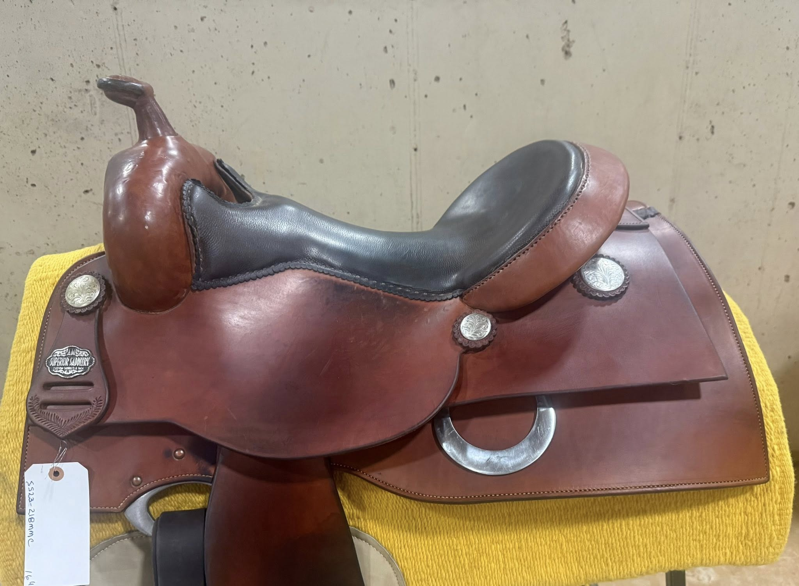
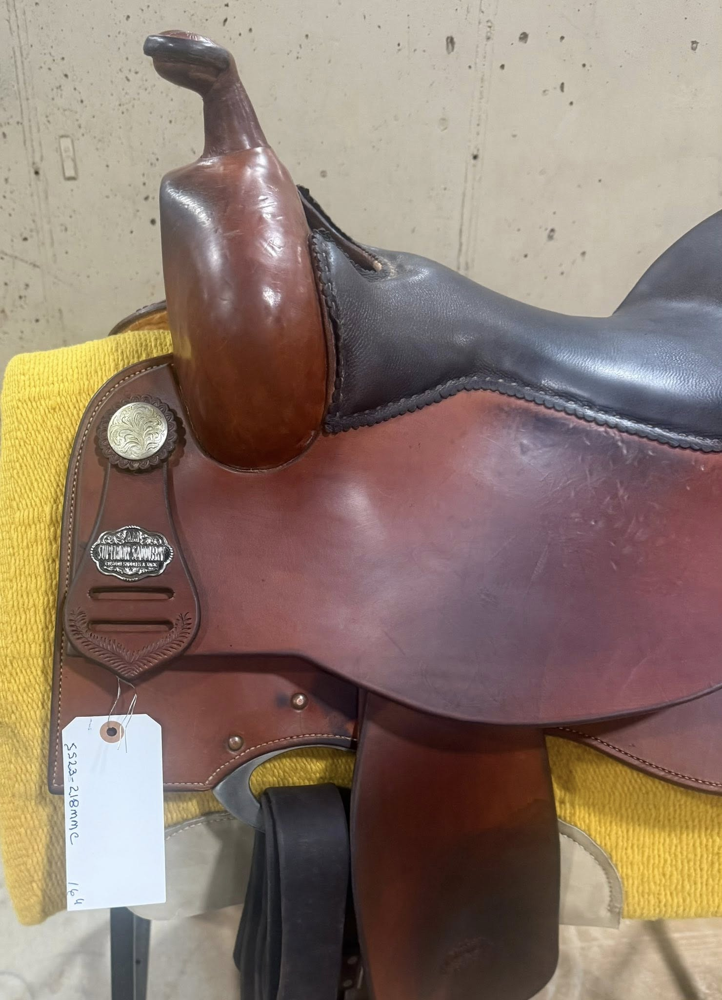
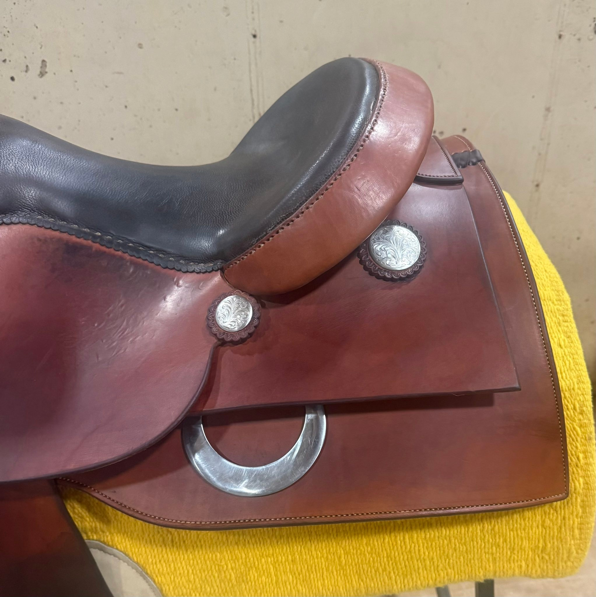

Superior Saddlery — A. Maschke
Mandy McCutcheon Reiner — 16" Seat
Pre-Owned
$2,995
Price
| Maker | Superior Saddlery — A. Maschke |
| Model | Mandy McCutcheon Reiner |
| Serial | SS23-218MMC |
| Seat Size | 16" |
| Seat | Chocolate Smooth Leather |
| Finish | Rich Walnut |
| Stirrups | Nettles Wood Stirrups |
| Silver | Sterling Silver Conchos |
| Hardware | Rear Dee Rings |
| Endorser | Mandy McCutcheon — NRHA Hall of Fame |
| Condition | Pre-Owned |
Mandy McCutcheon is an NRHA Hall of Fame inductee and the only woman to surpass $3 million in NRHA Non Pro earnings — a milestone that has never been matched. This saddle carries her signature endorsement from Andy Maschke's Superior Saddlery.
David Solum Certified — Tree integrity verified, leather condition documented, rigging inspected. Serial number SS23-218MMC confirmed.
About This Saddle
The Mandy McCutcheon signature reiner by Superior Saddlery is one of the more distinctive endorsed models in Andy Maschke's lineup — finished in a rich walnut tone that sets it apart from the darker chocolate builds more common in the catalog. This 16" example carries serial number SS23-218MMC, confirming its Mandy McCutcheon designation directly from the Superior Saddlery production records.
Nettles wood stirrups are a quality finishing detail — the same style used by top Non Pro competitors who want security and a traditional western aesthetic. The chocolate smooth leather seat, sterling silver conchos, and rear dee rings complete a well-balanced package. Built on Andy Maschke's SYMMETREES™ tree.
Mandy McCutcheon's endorsement carries genuine weight — she is the only woman in NRHA history to surpass $3 million as a Non Pro rider, and an NRHA Hall of Fame inductee. Certified by David Solum at $2,995.
Ready to Inquire?
Contact David Solum today to ask questions, arrange viewing, or place a hold on this saddle.